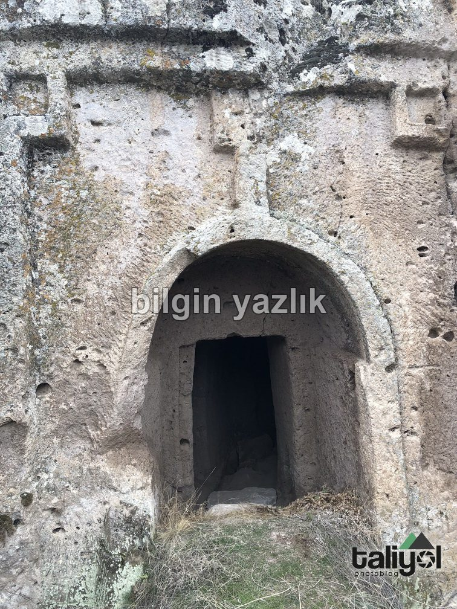
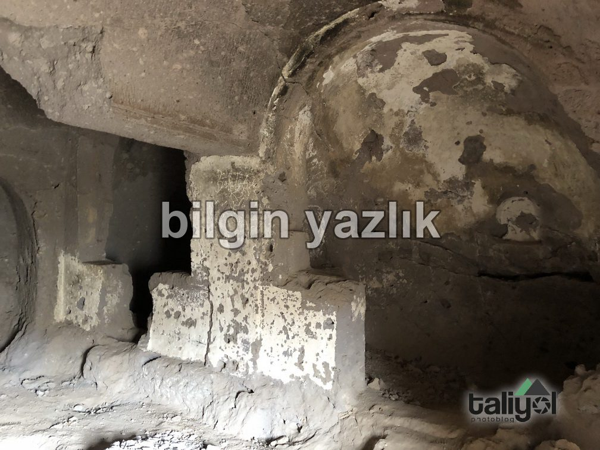
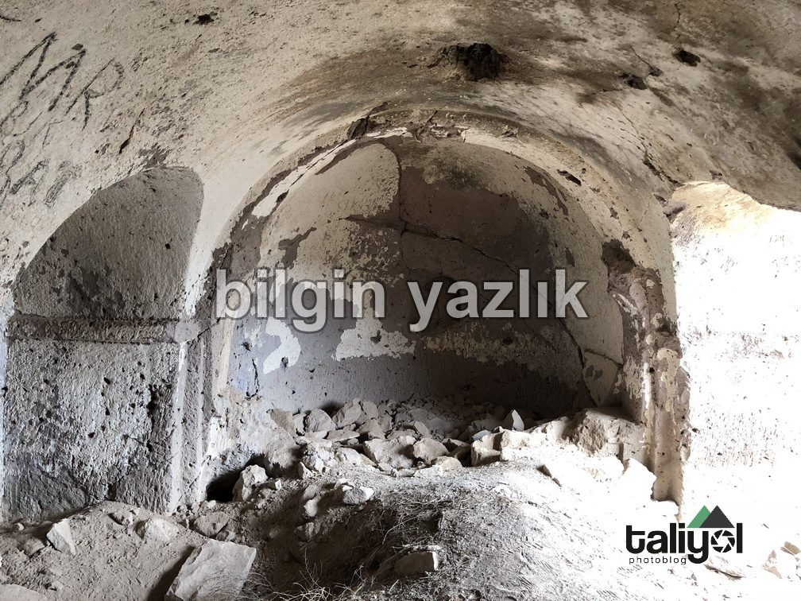
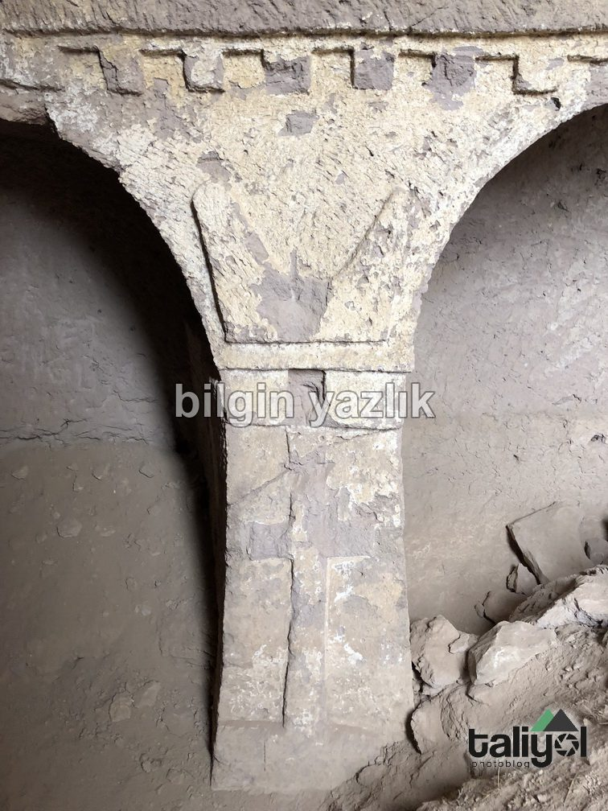
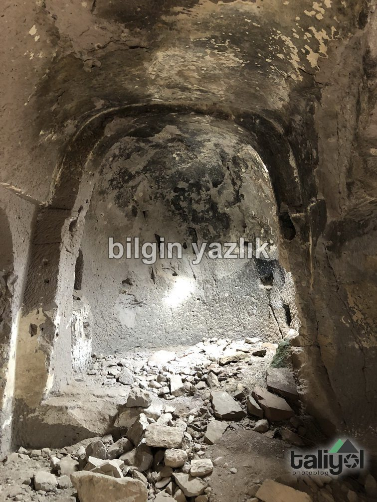
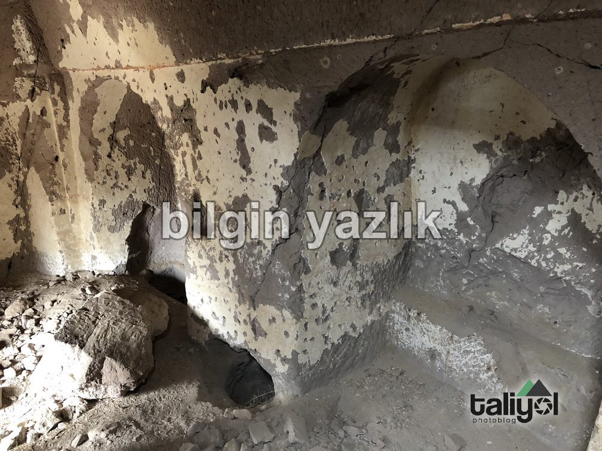
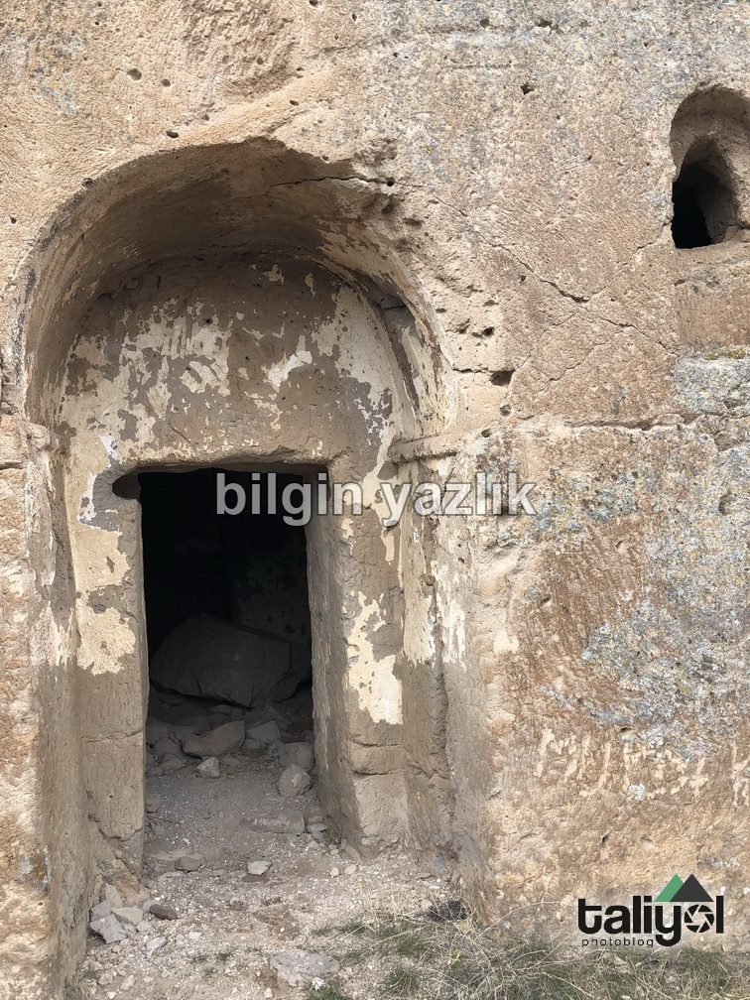
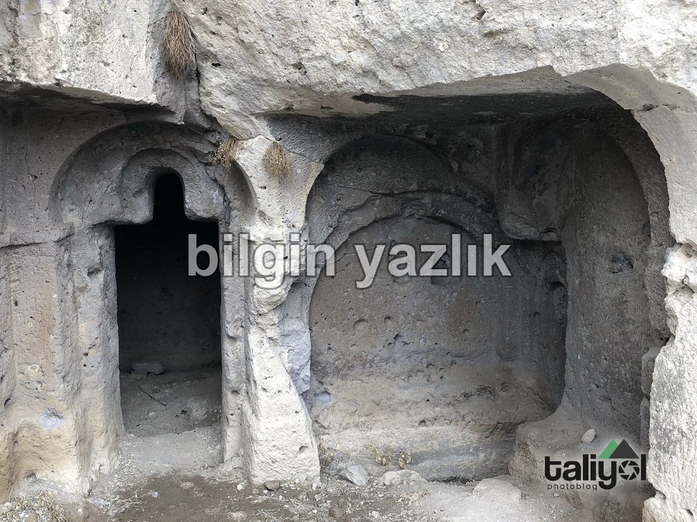
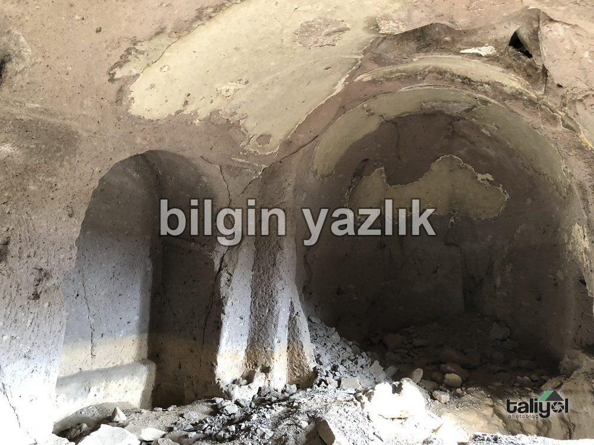
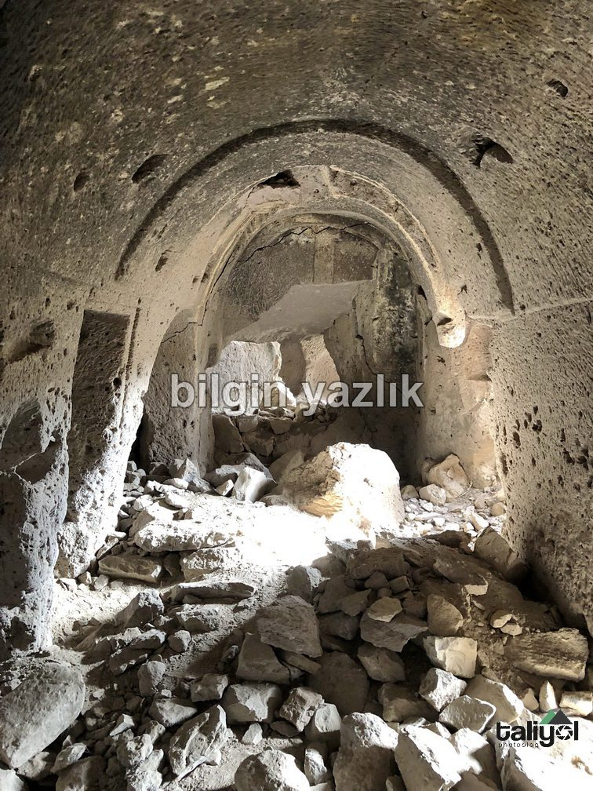

Kayseri & Koramaz · 10 Şubat 2018
Ağırnas Kaya Kiliseleri
Ağırnas’ın Koramaz Vadisi içerisinde yer alan bölümünde toplamda 9 adet kaya kilise yer almaktadır.
Bu kiliselerin Bizans dönemine tarihlendiğini düşünmekteyiz.
Kiliselerin giriş kapıları genel itibari ile oldukça özenli yapılmıştır.
Bir kilisenin çift apsisi bulunmaktadır ve hiçbirinde fresk izi kalmamıştır.










Bu yazı taliyol arşivinden taşınmıştır. · özgün kayıt